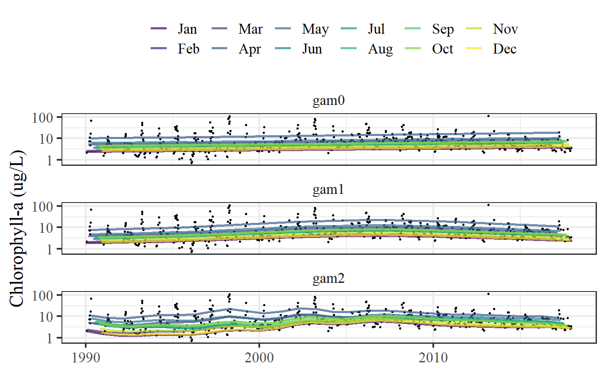

show_prdseason.RdPlot predictions for GAMs over time, by season
show_prdseason(moddat = NULL, mods = NULL, ylab, nfac = NULL, ...)
| moddat | input raw data, one station and parameter |
|---|---|
| mods | optional list of model objects |
| ylab | chr string for y-axis label |
| nfac | numeric indicating column number for facets, passed to |
| ... | additional arguments passed to other methods |
A ggplot object
Other show: show_avgseason,
show_perchg, show_prd3d,
show_prddoy, show_prdseries
library(dplyr) # get predictions for all four gams tomod <- rawdat %>% filter(station %in% 32) %>% filter(param %in% 'chl') if (FALSE) { show_prdseason(moddat = tomod, ylab = 'Chlorophyll-a (ug/L)', trans = 'boxcox') } # use previously fitted list of models trans <- 'boxcox' mods <- list( gam0 = anlz_gam(tomod, mod = 'gam0', trans = trans), gam1 = anlz_gam(tomod, mod = 'gam1', trans = trans), gam2 = anlz_gam(tomod, mod = 'gam2', trans = trans) ) show_prdseason(moddat = tomod, mods = mods, ylab = 'Chlorophyll-a (ug/L)')